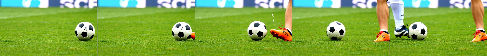
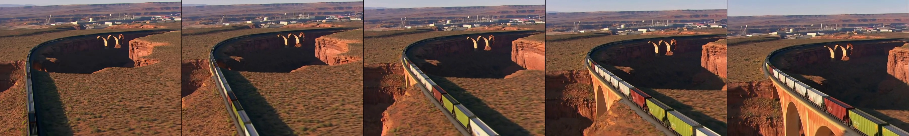
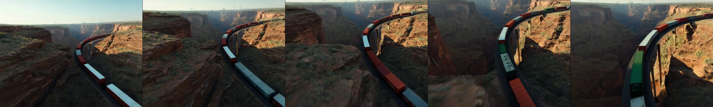

Ours

Baseline
Current video diffusion models generate visually compelling content but often violate basic laws of physics, producing subtle artifacts like rubber-sheet deformations and inconsistent object motion.
We introduce a frequency-domain physics prior that improves motion plausibility without modifying model architectures. Our method decomposes common rigid motions (translation, rotation, scaling) into lightweight spectral losses, requiring only 2.7% of frequency coefficients while preserving more than 97% of spectral energy.
Applied to video diffusion backbones such as Open-Sora, MVDIT, and Hunyuan, the loss improves motion accuracy, temporal consistency, and text-video alignment while maintaining visual quality.
Below are representative frame strips. The proposed loss produces smoother, more coherent motion than the baseline on simple projected motion prompts.
Ours

Baseline

Ours

Baseline